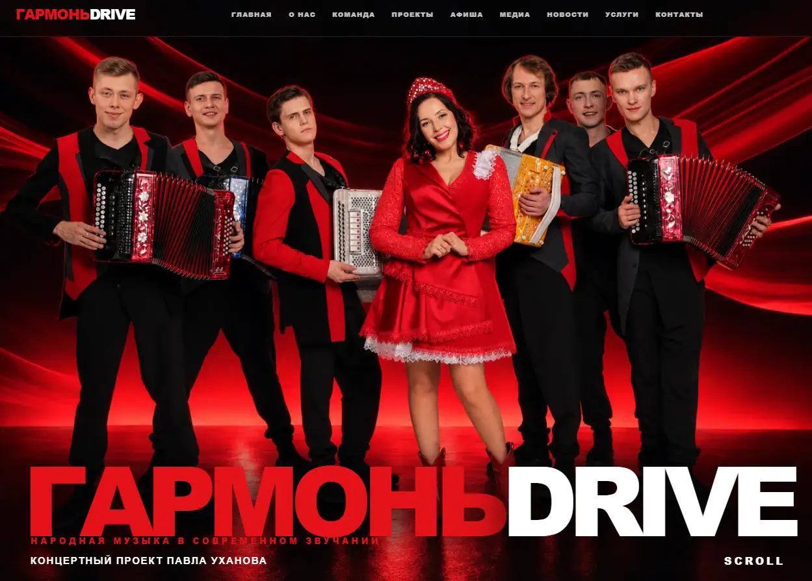
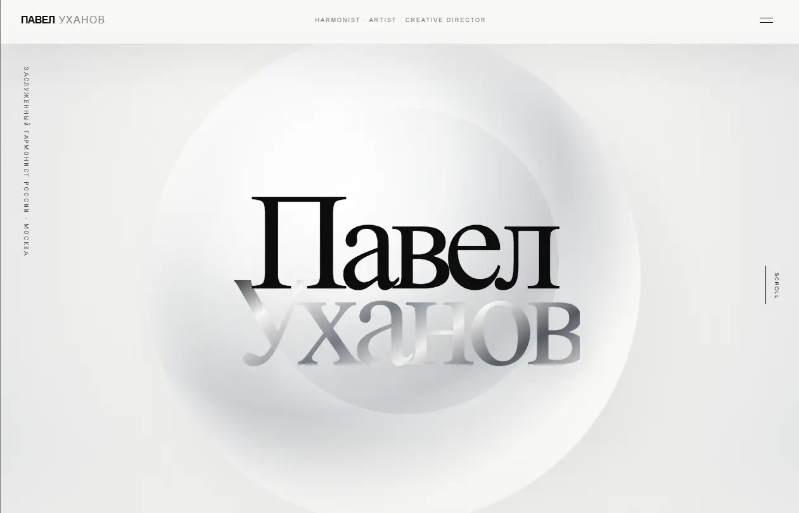
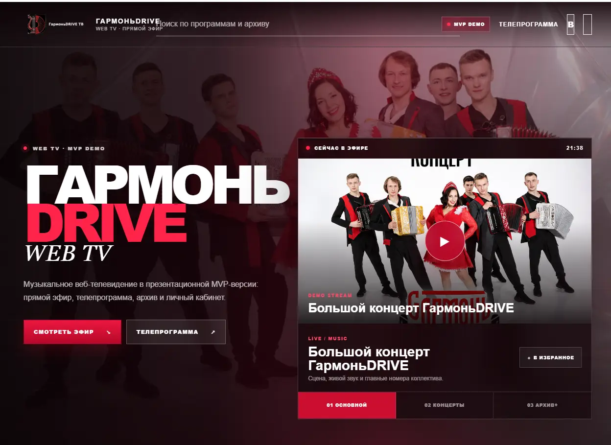
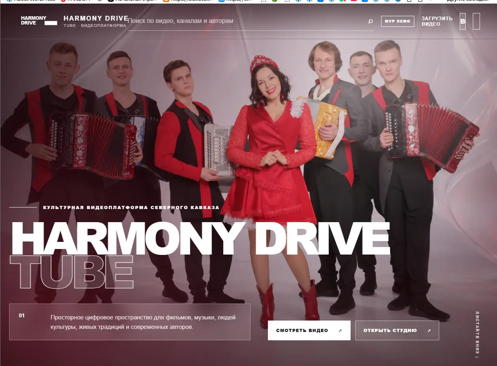
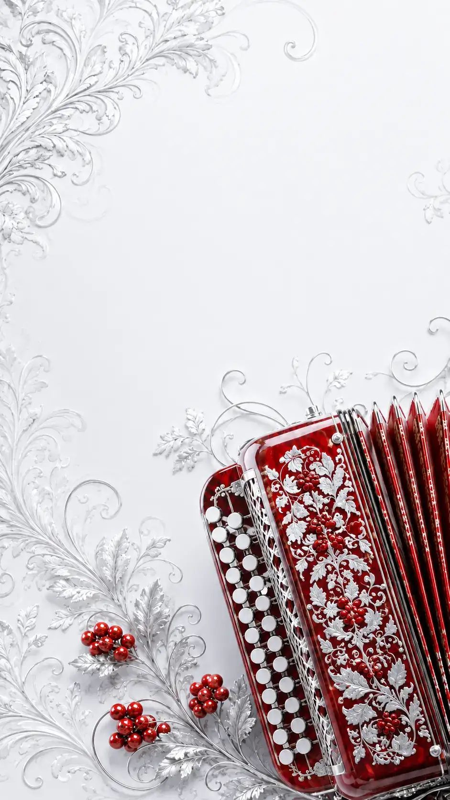

01 / ПРОЕКТ
Гармонь Drive
Концертный проект Павла Уханова. Сейчас подготовлены три визуальные концепции одного и того же сайта.
Смотреть 3 варианта ↓Официальный сайт · цифровая экосистема
Не отдельный сайт одного коллектива, а единый официальный портал Павла Уханова. Личный сайт становится главным входом, а все проекты работают внутри одной экосистемы.
Предлагаю собрать не набор разрозненных страниц, а Ваш единый официальный цифровой портал.
Главная страница — это Павел Уханов. Для неё уже подготовлен отдельный концепт личного сайта, который можно открыть и посмотреть прямо из этой презентации. Внутри основного портала находятся самостоятельные проекты: Гармонь Drive, Гармонь Drive Web TV, Гармонь Drive Tube и магазин. У каждого проекта остаётся собственный характер, но для пользователя всё воспринимается как одна система.
Для сайта Гармонь Drive подготовлены три варианта визуала. В финальный портал войдёт только один выбранный вариант. TV и Tube менять не нужно — они остаются самостоятельными сервисами и открываются из основного сайта.
Ниже можно сразу открыть все рабочие варианты и понять общую структуру.
Один официальный адрес

Отдельный визуальный концепт личного сайта: биография, творчество, афиша, новости, контакты и вход во все цифровые проекты.
ОТКРЫТЬ КОНЦЕПТ ↗
Концертный проект Павла Уханова. Сейчас подготовлены три визуальные концепции одного и того же сайта.
Смотреть 3 варианта ↓
Отдельное веб-телевидение: эфир, телепрограмма, архив, каналы и кабинет.
ОТКРЫТЬ MVP ↗
Видеоплатформа: каталог, каналы, авторские страницы, студия и личный кабинет.
ОТКРЫТЬ MVP ↗
Самостоятельный коммерческий модуль. Магазин уже размещён на сервере и подключается к основному порталу отдельным пунктом.
УЖЕ НА СЕРВЕРЕОдин проект · три визуальных решения
Это не три разных проекта. Это три варианта внешнего вида одного сайта Гармонь Drive. После выбора один вариант становится официальным, два остальных просто не используются.
Не только дизайн
Внутри экосистемы уже предусмотрен единый контур управления. Он нужен не посетителю сайта, а владельцу проекта и команде — чтобы управлять людьми, контентом и сервисами из одной системы.
Регистрация, вход, профили, личные кабинеты и управление данными аккаунта.
Студия автора, загрузка материалов, описание, обложки, публикации и редакторские сценарии.
Каналы, каталог, телепрограмма, архив, просмотр и отдельные страницы программ и авторов.
Единая логика проектов, роли и доступы, безопасная работа с загрузками и административными функциями.
AI-редактор и помощник для подготовки описаний, тегов, расшифровки и предварительной обработки материалов.
В демонстрационных версиях уже связаны внутренние страницы и основные пользовательские сценарии. Финальное подключение фиксируется после выбора структуры и дизайна.
Что получается в итоге
Пользователь приходит на официальный сайт Павла Уханова и уже оттуда попадает в нужный проект, не теряя связь с основным брендом.
Контент, пользователи и сервисы можно свести к единому административному контуру вместо нескольких разрозненных систем.
Новые проекты, медиа, концерты, магазин и специальные разделы можно добавлять как модули, не переделывая весь портал заново.
Следующий шаг
Если идея единой экосистемы подходит, достаточно определить, нужен ли такой формат и какой из трёх вариантов Гармонь Drive ближе: «Огонь», «Лето» или «Зима». После этого можно зафиксировать структуру и довести общий портал до финального вида.
Если ничего из предложенного не подходит — можно просто не отвечать на это сообщение.
С уважением,
Сергей